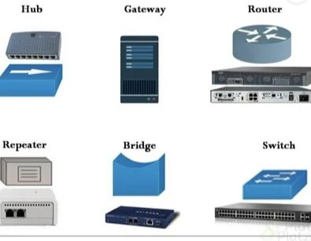
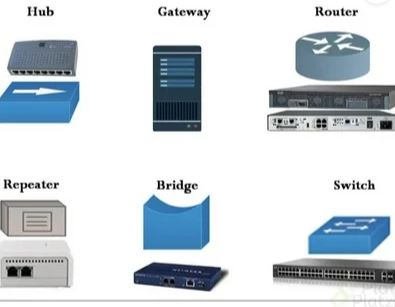

Las redes de computadoras surgieron en la década de 1960 como una forma de conectar varias computadoras y permitirles compartir recursos.
El primer ejemplo de una red de computadoras fue ARPANET, una red creada por el Departamento de Defensa de EE. UU. en 1969.
En los años 70 y 80, las redes de computadoras se expandieron rápidamente en el ámbito académico y empresarial.
Las empresas comenzaron a utilizar redes para compartir recursos como impresoras y archivos,
mientras que las universidades las usaban para compartir información y permitir la colaboración en investigación.
Las redes de computadoras se basan en varios principios y tecnologías, que permiten la comunicación entre dispositivos de manera eficiente y confiable. Algunas de las bases fundamentales de las redes de computadoras incluyen:
 

La historia de las redes de computadoras comienza en la década de 1960, cuando las computadoras comenzaron a ser utilizadas en entornos empresariales y académicos. En ese momento, las computadoras se utilizaban principalmente para procesar grandes cantidades de datos, pero no estaban conectadas entre sí. En 1969, el Departamento de Defensa de los Estados Unidos creó la ARPANET, una red de computadoras que conectaba a cuatro universidades en California. Esta red utilizaba un protocolo llamado TCP/IP, que se convirtió en el protocolo estándar utilizado en Internet. Durante la década de 1970, se desarrollaron varias tecnologías de redes de computadoras, incluyendo el protocolo Ethernet y la topología en estrella. Estas tecnologías permitieron que las redes de computadoras se expandieran y se conectaran a través de largas distancias. En la década de 1980, las redes de computadoras comenzaron a ser utilizadas en entornos empresariales y se desarrollaron estándares como el protocolo de transferencia de archivos (FTP) y el protocolo de correo electrónico (SMTP). En la década de 1990, la World Wide Web se convirtió en una herramienta importante para la comunicación y el intercambio de información a través de Internet. Además, surgieron redes de área local inalámbricas (WLAN) que permitían la conexión de dispositivos sin necesidad de cables.
El objetivo principal de las redes de computadoras es permitir la comunicación y el intercambio de información entre diferentes dispositivos informáticos, como computadoras, servidores, dispositivos móviles, impresoras, cámaras, entre otros, independientemente de su ubicación física. Lo que permite a los usuarios acceder y compartir recursos, trabajar de manera colaborativa y eficiente, y hacer uso de servicios y aplicaciones en línea.